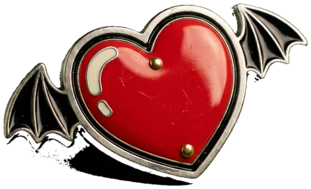
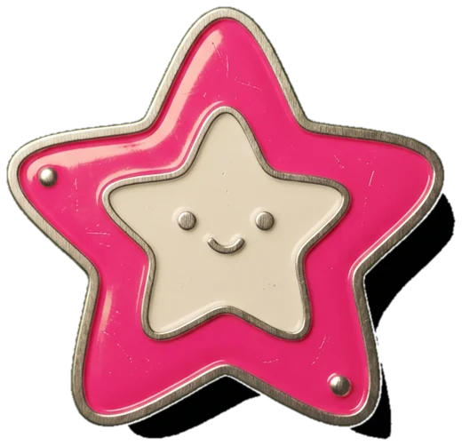
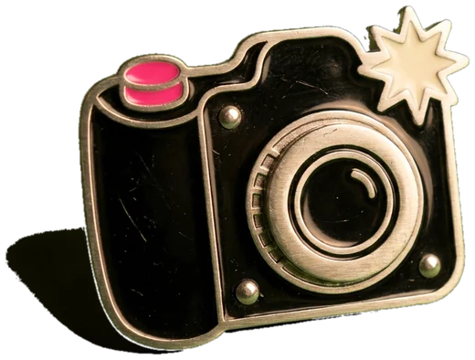
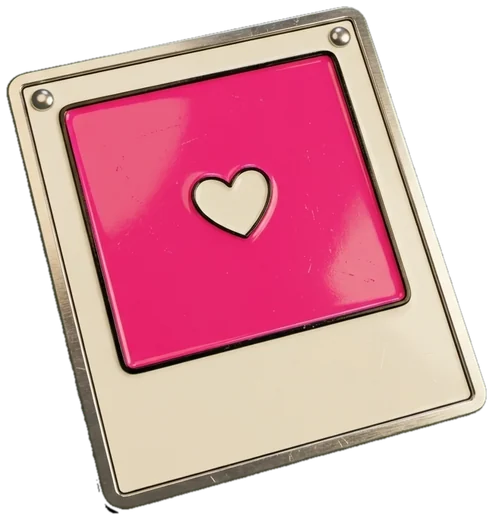
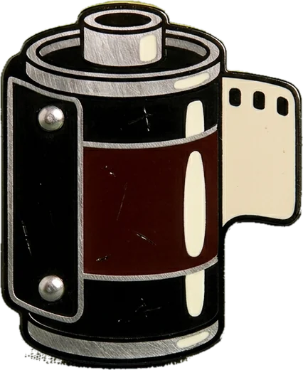
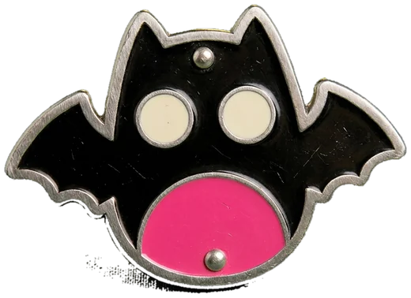
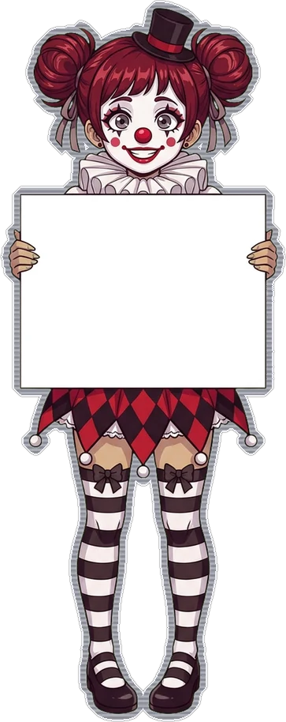
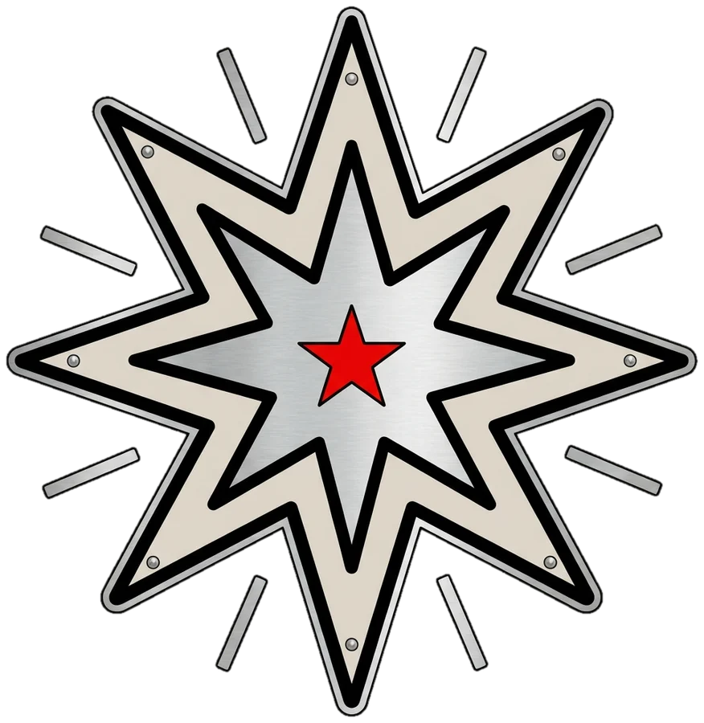

The Kit
ten tools · one hand · no signal neededBuilt by 0FF THE PRINT · San Antonio · add it to your home screen and it opens with no signal · the Crypt
Prompter
paste the script · tap the screen to pause · it remembers
Mirror flips it for a glass rig. Speed is pixels a second: 55 reads like a calm sentence, 90 like a hype voiceover. Keep the phone level with the lens so your eyes stay on the glass.
Slate
mark = white flash + 1 kHz beep · every mark lands in the take log
Tap Mark on the clap: the screen goes white one frame and the beep hits every mic in the room, so the FX6, the Luna and the lav line up on one spike in the edit. Tail is the same for a tail slate. The take number steps up after every mark.
Take log
tap the circle on the keeper · notes stick · share the CSV
One row per mark: time, roll, scene, shot, take, circle, note. Drop the CSV next to the footage and the keepers are already picked when you sit down in Resolve.
Release
name · handle · finger signature · a PDF you both get
The PDF carries your name, their details, the words, the date and the signature, and opens in the share sheet so you can mail it to yourself and to them in one go. Kept on this phone until you clear it. Plain-language form, not legal advice.
Golden hour
sunrise · golden · blue · where the sun sits
Golden hour is the hour after sunrise and the hour before sunset. Blue hour runs from sunset to the end of civil twilight, when the sky still holds color and the signs come on. Point the compass arm at where the sun sits and put your subject's back to it for rim light.
Viewfinder
frame guides over the camera · a rough lens picker
Pick the delivery frame (2.39, 16:9, 4:5, 9:16) and the guides mask the rest. The lens picker crops the phone's main camera to roughly what 35, 50 or 85 would see on the FX6 full frame. A rough scout tool, not a calibrated finder.
Exposure
pick the camera first · shutter · ND · depth · what each body can and cannot do
Slow-mo
how slow it plays · the shutter at that rate · what it costs in light and in pixels
Stopwatch
the crown starts and stops · the pusher laps, or resets when stopped · it keeps counting when you leave
Screens
turn the brightness all the way up first · tap the screen to leave · the stopwatch has its own door now
The grey screen is a stand-in for an 18% card: fill the frame with it, set custom white balance, move on. The tone runs at a fixed level for a quick check that a mic is live; it is not a calibrated reference.
Dark mode on the phone. Every screen here is painted as an image, which a browser's forced dark mode leaves alone. If a white still comes up dark, the browser is repainting the page: Samsung Internet, the menu, Settings, Appearance, Dark mode, turn on Use website dark theme (or turn Dark mode off while you shoot). Chrome: Settings, Theme, turn off Darken websites.









